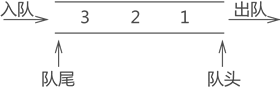
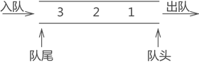

什么是队列（队列存储结构）
队列，和栈一样，也是一种对数据的"存"和"取"有严格要求的线性存储结构。
与栈结构不同的是，队列的两端都"开口"，要求数据只能从一端进，从另一端出，如图 1 所示：

图 1 队列存储结构
队列存储结构的实现有以下两种方式：
两者的区别仅是顺序表和链表的区别，即在实际的物理空间中，数据集中存储的队列是顺序队列，分散存储的队列是链队列。
实际生活中，队列的应用随处可见，比如排队买 XXX、医院的挂号系统等，采用的都是队列的结构。
拿排队买票来说，所有的人排成一队，先到者排的就靠前，后到者只能从队尾排队等待，队中的每个人都必须等到自己前面的所有人全部买票成功并从队头出队后，才轮到自己买票。这就不是典型的队列结构吗？
明白了什么是队列，接下来开始系统地学习顺序队列和链队列。
与栈结构不同的是，队列的两端都"开口"，要求数据只能从一端进，从另一端出，如图 1 所示：

图 1 队列存储结构
通常，称进数据的一端为 "队尾"，出数据的一端为 "队头"，数据元素进队列的过程称为 "入队"，出队列的过程称为 "出队"。
不仅如此，队列中数据的进出要遵循 "先进先出" 的原则，即最先进队列的数据元素，同样要最先出队列。拿图 1 中的队列来说，从数据在队列中的存储状态可以分析出，元素 1 最先进队，其次是元素 2，最后是元素 3。此时如果将元素 3 出队，根据队列 "先进先出" 的特点，元素 1 要先出队列，元素 2 再出队列，最后才轮到元素 3 出队列。栈和队列不要混淆，栈结构是一端封口，特点是"先进后出"；而队列的两端全是开口，特点是"先进先出"。
因此，数据从表的一端进，从另一端出，且遵循 "先进先出" 原则的线性存储结构就是队列。队列存储结构的实现有以下两种方式：
两者的区别仅是顺序表和链表的区别，即在实际的物理空间中，数据集中存储的队列是顺序队列，分散存储的队列是链队列。
实际生活中，队列的应用随处可见，比如排队买 XXX、医院的挂号系统等，采用的都是队列的结构。
拿排队买票来说，所有的人排成一队，先到者排的就靠前，后到者只能从队尾排队等待，队中的每个人都必须等到自己前面的所有人全部买票成功并从队头出队后，才轮到自己买票。这就不是典型的队列结构吗？
明白了什么是队列，接下来开始系统地学习顺序队列和链队列。
关注公众号「站长严长生」，在手机上阅读所有教程，随时随地都能学习。内含一款搜索神器，免费下载全网书籍和视频。

微信扫码关注公众号